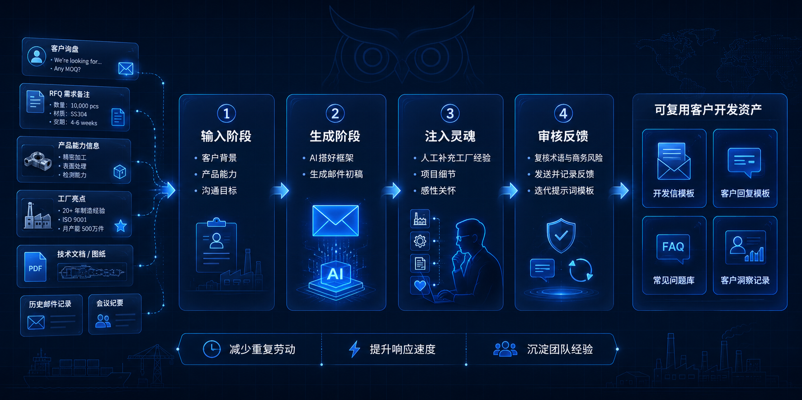

近年来，“AI 革命”在各行各业掀起了浪潮。很多中小制造企业的老板和外贸负责人也感到焦虑，试图一步到位地上线复杂的 AI 报价系统、知识库或全自动客户跟进系统。然而，高昂的试错成本和团队极高的学习门槛，往往让这些庞大的计划落地无门。
其实，对于绝大多数中小制造企业来说，引入 AI 最务实、最容易见效的第一步，就是外贸邮件。与其指望 AI 成为全自动接单的“神仙”，不如先让它成为外贸业务员手边不知疲倦的“高级助理”。
1. 为什么外贸邮件是制造企业引入 AI 的低风险入口？
在制造企业的所有数字化转型项目中，直接让 AI 介入排产或报价的风险极高。相比之下，外贸沟通尤其是邮件，是一个完美的“练兵场”：
- 格式相对固定：外贸邮件通常有清晰的目的和结构，从开发信到打样确认，框架有迹可循。
- 使用频率极高：业务员每天需要处理大量邮件，一旦提效，复用价值巨大。
- 决策容错率高：一封邮件即使初稿写得不够精准，只要经过人工修改再发出，就不会对生产造成直接损失。
- 重复表达占多数：很多时候业务员花时间写的，只是“重复套话 + 专业微调”，AI 极其擅长处理这类格式化信息的重组。
"Do not start your AI journey with complex ERP automation. Start with daily emails. It is the lowest risk and highest ROI entry point for a manufacturing sales team."
2. 制造企业外贸邮件中常见的低效问题
传统的外贸工作模式下，企业在邮件沟通中经常暴露出以下短板：
- 开发信套话严重：开篇就是“We are a professional manufacturer...”，毫无记忆点。
- 缺乏客户背景调研：业务员没有时间仔细查阅客户官网，导致发出的邮件无法痛击客户的真实需求。
- 技术翻译生硬难懂：把研发给的中文参数直接丢进机翻，不仅术语不统一，甚至改变了工程语境。
- 跟进缺乏节奏感：报价或寄样后，除了问“Any updates?”，想不出更有价值的跟进话题。
- 数字资产未沉淀：优秀的回复逻辑和案例资料只存在于老业务员的个人邮箱里，新员工无法复用。
3. AI 可以具体帮助哪些邮件场景？
将上述痛点拆解，我们可以看到 AI 在外贸邮件的各个关键节点上，都能大幅提升初稿的质量与速度。
| 邮件场景 | 传统方式面临的问题 | AI 辅助后的方式 |
|---|---|---|
| 冷开发邮件 (Cold Email) | 万年不变的模板群发，打开率极低 | 输入客户官网信息，AI 自动提取痛点，生成高度个性化的第一封信 |
| LinkedIn 后续邮件 | 加完好友后直接推销产品，容易被拉黑 | AI 分析对方动态，从行业见解或赞同其观点切入，自然过渡到业务 |
| RFQ 初步回复 | 核算成本慢，回复不够及时导致客户流失 | AI 快速抓取 RFQ 核心要求，一分钟生成“已收到+确认关键参数”的专业安抚邮件 |
| 技术问题解释 | 业务员难以将复杂的工艺用清晰的英文表达 | 输入中文工程解释，AI 转化为专业且通俗易懂的英文工程邮件 |
| 报价前资料补充 | 干巴巴地发去一个价格表，缺乏价值塑造 | AI 根据报价单自动匹配过往类似成功案例，结构化展示企业实力 |
| 样品/项目进度跟进 | 除了问“How is it going”别无他话 | AI 提供 3-4 种不同维度的跟进话术（例如行业资讯分享、工艺优化建议） |
| 沉睡客户激活 | 不知道找什么由头重新联系 | AI 针对客户所在市场生成“近期海运费变化”或“新材料应用”的破冰邮件 |
正确的人机协作流程
要让 AI 真正发挥价值，团队必须摒弃“一键生成并发送”的懒惰思维，建立标准的人机协作工作流：
- 输入阶段：业务员提供准确的客户背景、真实的产品能力和具体沟通目标。
- 生成阶段：AI 快速搭好框架，生成逻辑清晰、语言地道的邮件初稿。
- 注入灵魂：业务员人工补充真实的工厂经验、项目细节和感性关怀。
- 审核反馈：人工复核关键术语与商务风险，发送后记录客户反馈，持续迭代提示词模板。

4. 绝不能让 AI 替你做哪些决定？
尽管 AI 很强大，但在 B2B 复杂的商业博弈中，边界感极其重要。以下几点是制造团队必须守住的底线：
- 不要让 AI 编造客户案例：诚实是工程信任的基础，虚假的公差和捏造的案例迟早会穿帮。
- 不要夸大工厂能力：如果做不到高精度，就不要让 AI 在邮件里承诺，预期管理比接单更重要。
- 不要自动承诺价格和交期：商务条款必须由人工严格审核。
- 不要完全抛弃人工审校：AI 有时会产生“幻觉”或使用过于华丽不符合工业风格的词汇。
- 不要用一封万能邮件群发：AI 的优势在于个性化，群发完全浪费了它的核心价值。
5. 对中小制造企业的现实落地建议
如果你的团队准备明天就开始实践，请按以下步骤推进：
- 梳理核心场景：先找出业务团队日常写得最头疼的 10 个常见邮件场景。
- 准备弹药库：把公司能力介绍、设备清单、真实案例、产品公差范围、常见 FAQ 整理成基础语料，喂给大模型。
- 统一下指令：建立统一的中英文术语表，避免 AI 把你家的独特工艺翻译成毫无辨识度的通用词。
- 持续复盘：每周开会对比一下，哪些 AI 辅助写的邮件回复率更高？把好的提示词固化下来。
- 形成数字资产：逐步将这些经过验证的模板和工作流沉淀为团队的外贸邮件资产库。
结论：
中小制造企业使用 AI，绝不应该从最庞大、最复杂的系统开始，而应该从每天都在发生、重复率最高、最容易沉淀的外贸邮件切入。外贸邮件从来都不是小事，它往往是海外客户对你企业专业度的第一印象。利用 AI 压缩低效的遣词造句时间，把精力留给建立真正的客户信任，这才是数字时代外贸人的核心竞争力。